Enedril · Fishing and Drilling Solutions
Joyeuses fêtes
de fin d'année
De la part de toute l'équipe d'Enedril

Merci pour votre confiance en 2026
Nous vous souhaitons de très belles fêtes et une année 2027 riche en projets et en succès partagés !